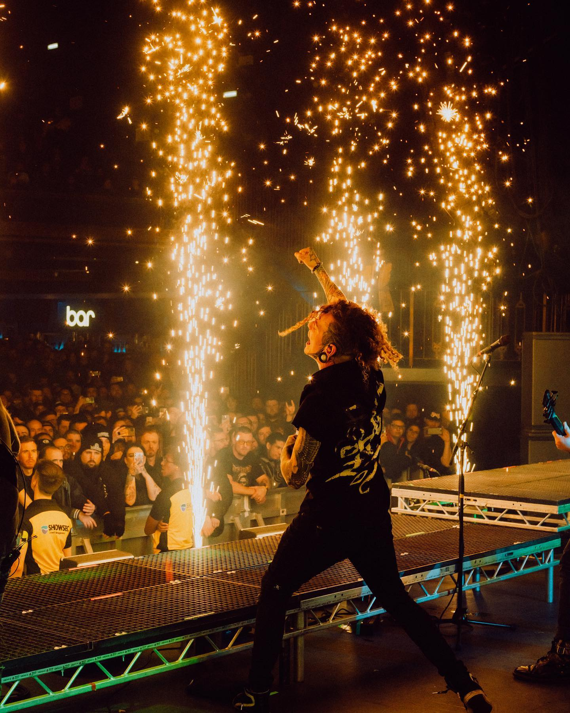
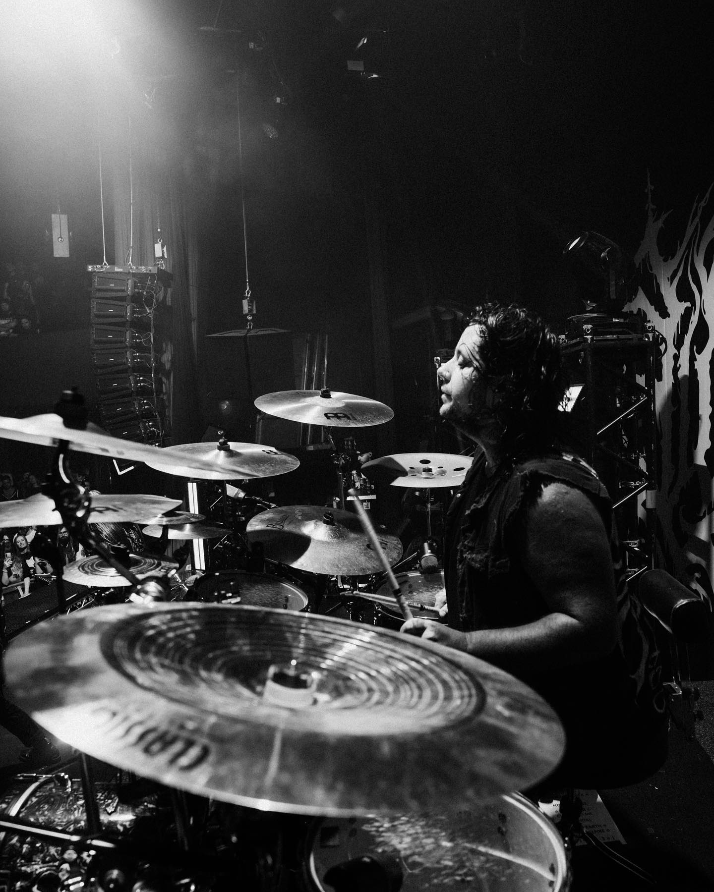

-PHOTOS-





The New Jersey quintet, LORNA SHORE, has returned and upped their sonic ante with new album, Pain Remains. “It feels like a rebirth of everything for us - the energy, the band, the morale,” says drummer Austin Archey. When the band decamped to Michigan’s Random Awesome Studios with producer Josh Schroeder in the Fall of 2021, LORNA SHORE was on a creative and personal high that carried them through five weeks of hard work and intense creativity. “This was the hardest record that we’ve ever had to write,” says guitarist Adam De Micco. “The title came out when I was writing the album,” recalls Adam. “I had a lot going on personally. A lot of loss – and that came out in the songwriting.” Nothing makes that more apparent than the three-part album-shuttering opus, “Pain Remains” that stretches over 20 minutes, bludgeoning the listener with a sense of scale and raw emotion with Will venting over a tidal of cascading riffs, animalistic growls and swelling synths. “I always wanted to write a really sad death metal song, a deathcore love song,” says vocalist Will Ramos. “When I first heard the music, it had so much emotion – have you ever fallen in love in a dream and woken up and realized that none of it was real? It’s about chasing that emotion.”
Pain Remains is the sound of a band breaking out of any sort of categorization and stepping into their own as a great extreme metal band. From the opening choral chants and orchestration (composed by guitarist Andrew O’Connor) of “Welcome Back, O’ Sleeping Dreamer” straight into labyrinth of musical twists, turns, technicalities and raw emotion at the core of tracks like “Sun//Eater” or “Soulless Existence”, LORNA SHORE has woven together a sprawling document of ambition, soul and ability that few can match. Clocking in at just over an hour, Pain Remains is as far-reaching in scope as any modern extreme metal album. It thinks big, pushing beyond preconception or musical boundaries. “That’s been the idea and the vision for the band for years,” states Adam. “We’ve never wanted to be limited or meet someone’s expectations of what we’re supposed to be.”
With Pain Remains, LORNA SHORE has truly arrived.